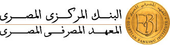

فيه خروجة بتتظبّط…
مصروفك محدود… هتعرف تهندلها؟

اتحرّك بالأسهم أو بأزرار الشاشة. اضغط ↑ عشان تنطّ، ومسافة عشان تتفاعل لما تقرّب من المحطة. زر «روح للمحطة» بيخلّي الشخصية تمشي لوحدها.
معاك ٦٠٠ جنيه. اتحجز منهم ١٠٠ للمواصلات، ومحتاج توصل ومعاك ٢٠٠ للتذكرة.
تخطيط، أولويات، شراء، مقارنة أسعار، طارئ، احتيال، مراجعة دفع، وتحقيق الهدف.
المزيكا بتبدأ بعد أول ضغطة. تقدر تقفل المزيكا أو المؤثرات من الأزرار فوق. كل الأصوات متولّدة داخل اللعبة، ومش محتاجة إنترنت.
النموذج مستند للتخطيط المالي والطوارئ وحماية البيانات في المادة المرفقة. تمت إضافة تمارين الأولويات والتكلفة النهائية ومراجعة الدفع لتطبيق نفس المبادئ. الجولة مش تقييمًا ماليًا شخصيًا، ومفيش حسابات أو مدفوعات حقيقية.